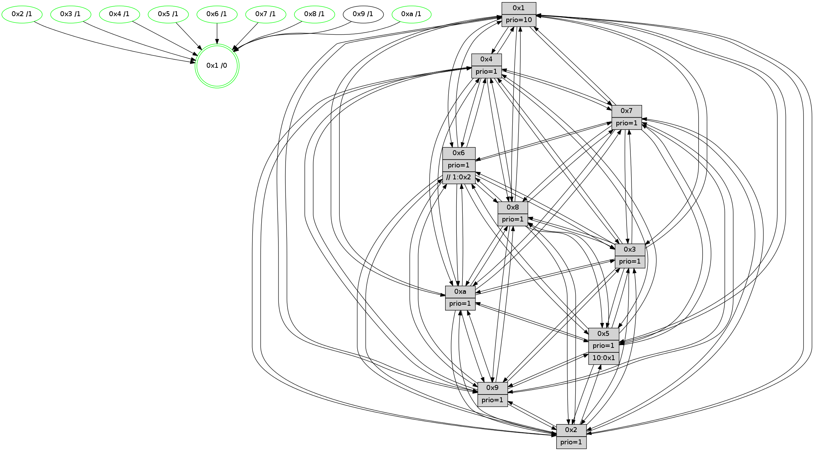

>> << IDX [start] -100 -25 -5 +0 +5 +25 +100 [1500.24183106]
 Previous packets
----------------------------------------------------------------------
1495.513044 beacon01(faad) #0 coord=01,02,03,04,05,06,07,0a,09,08 cycle=688.0ms assoc
-- color-indic=1 64 4c bc
1495.523027 beacon02(faad) #0 coord=01,02,03,04,05,06,07,0a,09,08 cycle=688.0ms assoc 64 df 8d
1495.533026 beacon03(faad) #0 coord=01,02,03,04,05,06,07,0a,09,08 cycle=688.0ms assoc 64 a5 c0
1495.543027 beacon04(faad) #0 coord=01,02,03,04,05,06,07,0a,09,08 cycle=688.0ms assoc 64 d2 2a
1495.553028 beacon05(faad) #0 coord=01,02,03,04,05,06,07,0a,09,08 cycle=688.0ms assoc 64 a8 67
1495.563026 beacon06(faad) #0 coord=01,02,03,04,05,06,07,0a,09,08 cycle=688.0ms assoc 64 26 b0
1495.573027 beacon07(faad) #0 coord=01,02,03,04,05,06,07,0a,09,08 cycle=688.0ms assoc 64 5c fd
1495.583032 beacon0a(faad) #0 coord=01,02,03,04,05,06,07,0a,09,08 cycle=688.0ms assoc 64 2d f6
1495.603034 beacon08(faad) #0 coord=01,02,03,04,05,06,07,0a,09,08 cycle=688.0ms assoc 64 d9 6c
1495.614754 [Hello(9): seq=897 sym=2,5,3,4,7,6,8,10,1 sysInfo=hasWarning stat=2:5,5,10,13/5:8,10,1,0/3:1,10,6,7/4:0,3,2,3/7:15,10,3,5/6:4,6,9,1/8:15,12,1,8/10:10,5,3,0/1:8,9,6,1]
1495.617197 [Hello(10): seq=886 sym=6,2,3,8,7,5,9,4,1 sysInfo=hasWarning stat=6:13,8,8,5/2:10,15,10,2/3:13,4,1,15/8:9,6,12,5/7:4,0,9,10/5:15,1,3,3/9:10,6,9,1/4:5,3,6,3/1:10,14,5,1]
1495.619752 [Color(1) seq=633 @0:0 prio=10]
1495.621047 [Hello(7): seq=953 sym=2,3,5,6,8,4,9,10,1 sysInfo=hasWarning stat=2:14,0,4,6/3:5,10,6,6/5:4,10,5,5/6:8,6,4,13/8:2,6,0,0/4:0,2,1,0/9:8,15,0,2/10:15,8,11,7/1:14,13,3,0]
1495.624211 [Hello(8): seq=897 sym=5,2,3,7,9,6,4,10,1 sysInfo=hasWarning stat=5:2,13,1,3/2:10,12,12,14/3:3,14,0,6/7:10,6,3,0/9:0,6,2,5/6:11,13,13,1/4:6,12,8,2/10:10,0,8,5/1:6,11,8,0]
1495.626871 [STC(5)->1 #0.264 tree-change,inconsistent-stability,stable,to-color d=1]
1495.628618 [STC(8)->1 #0.264 tree-change,inconsistent-stability,stable,to-color d=1]
1495.630839 [STC(7)->1 #0.264 tree-change,inconsistent-stability,stable,to-color d=1]
1495.632168 [TreeStatus(8)-.->1 #0.264 tree-change,inconsistent-stability,stable child=1]
1495.634178 [STC(10)->1 #0.264 tree-change,inconsistent-stability,stable,to-color d=1]
1495.635675 [STC(9)->1 #0.264 tree-change,inconsistent-stability,to-color d=1]
1495.637972 [Color(8) seq=552 @0:0 prio=1]
1495.639695 [Hello(4): seq=953 sym=5,8,6,2,3,9,7,10,1 sysInfo=hasWarning stat=5:0,9,3,4/8:7,14,1,0/6:10,4,15,2/2:8,5,6,3/3:7,0,13,1/9:5,15,8,2/7:10,3,4,0/10:11,0,15,14/1:0,6,8,1]
1495.642832 [STC(4)->1 #0.264 tree-change,inconsistent-stability,stable,to-color d=1]
1495.644774 [Color(4) seq=492 @0:0 prio=1]
1495.651126 [Color(7) seq=481 @0:0 prio=1]
----------------------------------------------------------------------
1496.301178 beacon01(faad) #0 coord=01,02,03,04,05,06,07,0a,09,08 cycle=688.0ms assoc
-- color-indic=1 64 78 a4
1496.311159 beacon02(faad) #0 coord=01,02,03,04,05,06,07,0a,09,08 cycle=688.0ms assoc 64 eb 95
1496.321160 beacon03(faad) #0 coord=01,02,03,04,05,06,07,0a,09,08 cycle=688.0ms assoc 64 91 d8
1496.331162 beacon04(faad) #0 coord=01,02,03,04,05,06,07,0a,09,08 cycle=688.0ms assoc 64 e6 32
1496.341160 beacon05(faad) #0 coord=01,02,03,04,05,06,07,0a,09,08 cycle=688.0ms assoc 64 9c 7f
1496.351160 beacon06(faad) #0 coord=01,02,03,04,05,06,07,0a,09,08 cycle=688.0ms assoc 64 12 a8
1496.361161 beacon07(faad) #0 coord=01,02,03,04,05,06,07,0a,09,08 cycle=688.0ms assoc 64 68 e5
1496.371167 beacon0a(faad) #0 coord=01,02,03,04,05,06,07,0a,09,08 cycle=688.0ms assoc 64 19 ee
1496.391166 beacon08(faad) #0 coord=01,02,03,04,05,06,07,0a,09,08 cycle=688.0ms assoc 64 ed 74
1496.402116 [Hello(1): seq=863 sym=4,2,9,5,10,3,8,6,7 sysInfo=coloring-mode-on,ColoringModeRequestCalled stat=4:10,1,6,4/2:5,15,14,7/9:11,2,15,2/5:15,7,5,11/10:6,1,6,8/3:14,15,4,13/8:6,14,2,6/6:10,8,1,3/7:10,0,9,2]
1496.406177 [Color(10) seq=543 @0:0 prio=1]
1496.407947 [Hello(3): seq=954 sym=1,7,6,2,4,8,9,10,5 sysInfo=hasWarning stat=1:7,4,9,0/7:5,11,9,15/6:10,1,12,3/2:3,7,1,1/4:9,2,12,14/8:12,12,2,8/9:1,0,2,1/10:1,15,7,5/5:5,15,4,3]
1496.410787 [Hello(6): seq=954 sym=3,2,5,4,7,9,8,10,1 sysInfo=hasWarning stat=3:1,2,8,0/2:7,13,3,1/5:5,7,12,6/4:5,10,5,9/7:0,15,2,0/9:7,4,6,11/8:5,5,13,9/10:9,0,15,13/1:10,8,7,1]
1496.416940 [Color(6) seq=586 @0:0 prio=1 >>1.@2,1.@3,1.@4]
1496.418862 [Color(2) seq=530 @0:0 prio=1]
1496.423968 [Hello(5): seq=954 sym=7,6,4,3,1,9,8,10,2 sysInfo=hasWarning stat=7:1,15,10,1/6:7,13,2,0/4:10,7,1,0/3:1,12,3,3/1:7,9,15,0/9:7,1,7,11/8:4,14,0,7/10:1,9,11,9/2:2,6,1,9]
1496.427093 [Color(5) seq=490 @0:0 prio=1 >10.@1,1.@2,1.@3,1.@4]
----------------------------------------------------------------------
1497.089308 beacon01(faad) #0 coord=01,02,03,04,05,06,07,0a,09,08 cycle=688.0ms assoc
-- color-indic=1 64 c4 a1
1497.099291 beacon02(faad) #0 coord=01,02,03,04,05,06,07,0a,09,08 cycle=688.0ms assoc 64 57 90
1497.109290 beacon03(faad) #0 coord=01,02,03,04,05,06,07,0a,09,08 cycle=688.0ms assoc 64 2d dd
1497.119291 beacon04(faad) #0 coord=01,02,03,04,05,06,07,0a,09,08 cycle=688.0ms assoc 64 5a 37
1497.129291 beacon05(faad) #0 coord=01,02,03,04,05,06,07,0a,09,08 cycle=688.0ms assoc 64 20 7a
1497.139291 beacon06(faad) #0 coord=01,02,03,04,05,06,07,0a,09,08 cycle=688.0ms assoc 64 ae ad
1497.149292 beacon07(faad) #0 coord=01,02,03,04,05,06,07,0a,09,08 cycle=688.0ms assoc 64 d4 e0
1497.159296 beacon0a(faad) #0 coord=01,02,03,04,05,06,07,0a,09,08 cycle=688.0ms assoc 64 a5 eb
1497.179297 beacon08(faad) #0 coord=01,02,03,04,05,06,07,0a,09,08 cycle=688.0ms assoc 64 51 71
1497.190756 [Hello(9): seq=898 sym=2,5,3,4,7,6,8,10,1 sysInfo=hasWarning stat=2:6,6,10,13/5:9,11,1,0/3:2,10,6,7/4:1,4,3,3/7:15,11,3,5/6:5,7,9,1/8:15,13,1,8/10:11,6,3,0/1:9,9,6,1]
1497.194497 [Hello(10): seq=887 sym=6,2,3,8,7,5,9,4,1 sysInfo=hasWarning stat=6:14,9,8,5/2:10,0,10,2/3:14,5,1,15/8:9,7,12,5/7:4,1,9,10/5:0,2,3,3/9:10,6,10,1/4:6,4,7,3/1:11,14,5,1]
1497.197216 [Hello(4): seq=954 sym=5,8,6,2,3,9,7,10,1 sysInfo=hasWarning stat=5:1,10,3,4/8:7,14,1,0/6:11,5,15,2/2:9,6,6,3/3:8,0,13,1/9:6,15,8,2/7:10,4,4,0/10:11,1,15,14/1:1,6,8,1]
1497.200080 [Hello(7): seq=954 sym=2,3,5,6,8,4,9,10,1 sysInfo=hasWarning stat=2:15,1,4,6/3:6,10,6,6/5:5,11,5,5/6:9,7,4,13/8:2,6,0,0/4:0,2,1,0/9:9,15,0,2/10:15,9,11,7/1:15,13,3,0]
1497.204804 [Color(7) seq=482 @0:0 prio=1]
1497.206451 [Hello(8): seq=898 sym=5,2,3,7,9,6,4,10,1 sysInfo=hasWarning stat=5:3,14,1,3/2:10,13,12,14/3:4,15,0,6/7:10,7,3,0/9:1,6,2,5/6:12,14,13,1/4:7,13,9,2/10:10,1,8,5/1:7,11,8,0]
1497.210227 [Color(8) seq=553 @0:0 prio=1]
1497.211764 [Color(1) seq=634 @0:0 prio=10]
----------------------------------------------------------------------
1497.877438 beacon01(faad) #0 coord=01,02,03,04,05,06,07,0a,09,08 cycle=688.0ms assoc
-- color-indic=1 64 00 af
1497.887422 beacon02(faad) #0 coord=01,02,03,04,05,06,07,0a,09,08 cycle=688.0ms assoc 64 93 9e
1497.897421 beacon03(faad) #0 coord=01,02,03,04,05,06,07,0a,09,08 cycle=688.0ms assoc 64 e9 d3
1497.907421 beacon04(faad) #0 coord=01,02,03,04,05,06,07,0a,09,08 cycle=688.0ms assoc 64 9e 39
1497.917421 beacon05(faad) #0 coord=01,02,03,04,05,06,07,0a,09,08 cycle=688.0ms assoc 64 e4 74
1497.927423 beacon06(faad) #0 coord=01,02,03,04,05,06,07,0a,09,08 cycle=688.0ms assoc 64 6a a3
1497.937424 beacon07(faad) #0 coord=01,02,03,04,05,06,07,0a,09,08 cycle=688.0ms assoc 64 10 ee
1497.947426 beacon0a(faad) #0 coord=01,02,03,04,05,06,07,0a,09,08 cycle=688.0ms assoc 64 61 e5
1497.967426 beacon08(faad) #0 coord=01,02,03,04,05,06,07,0a,09,08 cycle=688.0ms assoc 64 95 7f
1497.979975 [Hello(1): seq=864 sym=4,2,9,5,10,3,8,6,7 sysInfo=coloring-mode-on,ColoringModeRequestCalled stat=4:10,1,6,4/2:5,0,14,7/9:12,2,15,2/5:0,8,5,11/10:6,2,6,8/3:15,0,4,13/8:6,14,2,6/6:11,9,1,3/7:10,0,9,2]
1497.983774 [Hello(6): seq=955 sym=3,2,5,4,7,9,8,10,1 sysInfo=hasWarning stat=3:1,2,8,0/2:7,14,3,1/5:6,8,12,6/4:6,10,5,9/7:1,0,2,0/9:8,4,6,11/8:6,6,13,9/10:10,1,15,13/1:11,9,7,1]
1497.987866 [Color(6) seq=587 @0:0 prio=1 >>1.@2,1.@3,1.@4]
1497.989677 [Hello(5): seq=955 sym=7,6,4,3,1,9,8,10,2 sysInfo=hasWarning stat=7:1,0,10,1/6:7,13,2,0/4:11,7,1,0/3:1,12,3,3/1:8,10,15,0/9:8,1,7,11/8:5,15,0,7/10:2,9,11,9/2:2,6,1,9]
1497.993445 [Color(5) seq=491 @0:0 prio=1 >10.@1,1.@2,1.@3,1.@4]
1497.997036 [Color(10) seq=544 @0:0 prio=1]
1498.003552 [Hello(2): seq=951 sym=4,5,7,6,3,9,8,10,1 sysInfo=hasWarning stat=4:6,14,5,14/5:3,14,8,4/7:6,15,8,2/6:4,9,3,0/3:4,5,7,2/9:3,3,15,10/8:1,12,1,15/10:3,3,15,11/1:2,8,1,0]
1498.007662 [Color(2) seq=531 @0:0 prio=1]
1498.009682 [Hello(3): seq=955 sym=1,7,6,2,4,8,9,10,5 sysInfo=hasWarning stat=1:8,5,9,0/7:6,12,9,15/6:10,2,12,3/2:3,8,1,1/4:10,2,12,14/8:13,13,2,8/9:2,0,2,1/10:2,0,7,5/5:6,0,4,3]
1498.013122 [Color(3) seq=584 @0:0 prio=1]
----------------------------------------------------------------------
1498.665570 beacon01(faad) #0 coord=01,02,03,04,05,06,07,0a,09,08 cycle=688.0ms assoc
-- color-indic=1 64 bc aa
1498.675552 beacon02(faad) #0 coord=01,02,03,04,05,06,07,0a,09,08 cycle=688.0ms assoc 64 2f 9b
1498.685552 beacon03(faad) #0 coord=01,02,03,04,05,06,07,0a,09,08 cycle=688.0ms assoc 64 55 d6
1498.695553 beacon04(faad) #0 coord=01,02,03,04,05,06,07,0a,09,08 cycle=688.0ms assoc 64 22 3c
1498.705553 beacon05(faad) #0 coord=01,02,03,04,05,06,07,0a,09,08 cycle=688.0ms assoc 64 58 71
1498.715555 beacon06(faad) #0 coord=01,02,03,04,05,06,07,0a,09,08 cycle=688.0ms assoc 64 d6 a6
1498.725553 beacon07(faad) #0 coord=01,02,03,04,05,06,07,0a,09,08 cycle=688.0ms assoc 64 ac eb
1498.735559 beacon0a(faad) #0 coord=01,02,03,04,05,06,07,0a,09,08 cycle=688.0ms assoc 64 dd e0
1498.745558 beacon09(faad) #0 coord=01,02,03,04,05,06,07,0a,09,08 cycle=688.0ms assoc 64 53 37
1498.755557 beacon08(faad) #0 coord=01,02,03,04,05,06,07,0a,09,08 cycle=688.0ms assoc 64 29 7a
1498.767745 [Hello(10): seq=888 sym=6,2,3,8,7,5,9,4,1 sysInfo=hasWarning stat=6:14,9,8,5/2:11,1,10,2/3:15,6,1,15/8:10,8,12,5/7:5,2,9,10/5:0,2,3,3/9:10,6,10,1/4:7,4,7,3/1:12,15,5,1]
1498.770943 [STC(1) #0.265 tree-change,inconsistent-stability,stable,to-color d=0]
1498.772895 [Color(1) seq=635 @0:0 prio=10]
1498.775061 [Hello(7): seq=955 sym=2,3,5,6,8,4,9,10,1 sysInfo=hasWarning stat=2:0,2,4,6/3:7,11,6,6/5:6,12,5,5/6:10,8,4,13/8:3,7,0,0/4:0,2,1,0/9:10,15,0,2/10:15,10,11,7/1:0,14,3,0]
1498.779600 [Hello(9): seq=899 sym=2,5,3,4,7,6,8,10,1 sysInfo=hasWarning stat=2:7,7,10,13/5:10,12,1,0/3:3,11,6,7/4:2,5,3,3/7:15,12,3,5/6:6,8,9,1/8:0,14,1,8/10:12,7,3,0/1:10,10,6,1]
1498.782939 [Hello(8): seq=899 sym=5,2,3,7,9,6,4,10,1 sysInfo=hasWarning stat=5:4,15,1,3/2:11,14,12,14/3:5,0,0,6/7:10,7,3,0/9:2,6,2,5/6:13,15,13,1/4:7,13,9,2/10:11,2,8,5/1:8,12,8,0]
1498.785747 [Color(8) seq=554 @0:0 prio=1]
1498.787740 [Color(7) seq=483 @0:0 prio=1]
1498.790026 [Hello(4): seq=955 sym=5,8,6,2,3,9,7,10,1 sysInfo=hasWarning stat=5:2,11,3,4/8:8,15,1,0/6:12,6,15,2/2:10,7,6,3/3:9,1,13,1/9:7,15,8,2/7:10,5,4,0/10:12,2,15,14/1:2,7,8,1]
1498.793787 [Color(4) seq=494 @0:0 prio=1]
----------------------------------------------------------------------
1499.453701 beacon01(faad) #0 coord=01,02,03,04,05,06,07,0a,09,08 cycle=688.0ms assoc
-- color-indic=1 64 28 73
1499.463684 beacon02(faad) #0 coord=01,02,03,04,05,06,07,0a,09,08 cycle=688.0ms assoc 64 bb 42
1499.473683 beacon03(faad) #0 coord=01,02,03,04,05,06,07,0a,09,08 cycle=688.0ms assoc 64 c1 0f
1499.483684 beacon04(faad) #0 coord=01,02,03,04,05,06,07,0a,09,08 cycle=688.0ms assoc 64 b6 e5
1499.493683 beacon05(faad) #0 coord=01,02,03,04,05,06,07,0a,09,08 cycle=688.0ms assoc 64 cc a8
1499.503684 beacon06(faad) #0 coord=01,02,03,04,05,06,07,0a,09,08 cycle=688.0ms assoc 64 42 7f
1499.513685 beacon07(faad) #0 coord=01,02,03,04,05,06,07,0a,09,08 cycle=688.0ms assoc 64 38 32
1499.523688 beacon0a(faad) #0 coord=01,02,03,04,05,06,07,0a,09,08 cycle=688.0ms assoc 64 49 39
1499.533689 beacon09(faad) #0 coord=01,02,03,04,05,06,07,0a,09,08 cycle=688.0ms assoc 64 c7 ee
1499.543691 beacon08(faad) #0 coord=01,02,03,04,05,06,07,0a,09,08 cycle=688.0ms assoc 64 bd a3
1499.556552 [Hello(1): seq=865 sym=4,2,9,5,10,3,8,6,7 sysInfo=coloring-mode-on,ColoringModeRequestCalled stat=4:11,2,6,4/2:6,1,14,7/9:13,2,15,2/5:1,9,5,11/10:7,3,6,8/3:0,1,4,13/8:7,15,2,6/6:12,10,1,3/7:11,1,9,2]
1499.559914 [Hello(5): seq=956 sym=7,6,4,3,1,9,8,10,2 sysInfo=hasWarning stat=7:2,1,10,1/6:7,13,2,0/4:12,8,1,0/3:2,13,3,3/1:9,11,0,0/9:9,1,7,11/8:6,0,0,7/10:3,10,11,9/2:3,7,1,9]
1499.562967 [Hello(6): seq=956 sym=3,2,5,4,7,9,8,10,1 sysInfo=hasWarning stat=3:2,3,8,0/2:8,15,3,1/5:7,9,12,6/4:7,11,5,9/7:2,1,2,0/9:9,4,6,11/8:7,7,13,9/10:11,2,15,13/1:12,10,8,1]
1499.568685 [STC(10)->1 #0.265 tree-change,inconsistent-stability,stable,to-color d=1]
1499.569982 [Color(5) seq=492 @0:0 prio=1 >10.@1,1.@2,1.@3,1.@4]
1499.572546 [Color(10) seq=545 @0:0 prio=1]
1499.574519 [Hello(2): seq=952 sym=4,5,7,6,3,9,8,10,1 sysInfo=hasWarning stat=4:7,15,5,14/5:3,14,8,4/7:7,0,8,2/6:4,9,3,0/3:5,6,7,2/9:4,3,15,10/8:2,13,1,15/10:4,3,15,11/1:3,9,2,0]
1499.581526 [Color(2) seq=532 @0:0 prio=1]
1499.583684 [STC(3)->1 #0.265 tree-change,inconsistent-stability,stable,to-color d=1]
1499.587230 [Color(3) seq=585 @0:0 prio=1]
1499.592258 [Color(6) seq=588 @0:0 prio=1 >>1.@2,1.@3,1.@4]